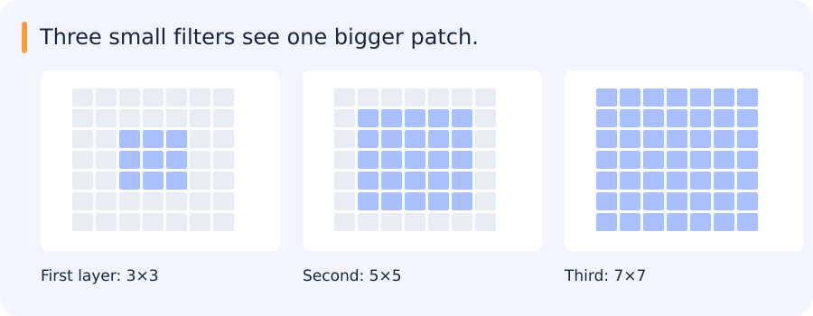
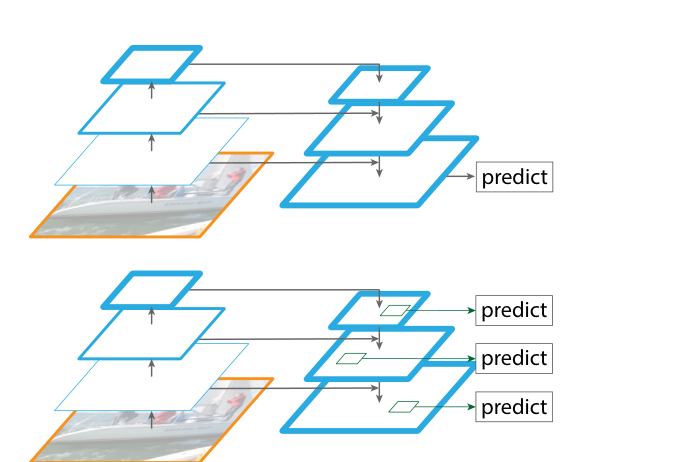

An image is a grid of numbers. A useful pattern, such as a bright edge or a wheel-shaped region, can occur at many positions in that grid. A convolution applies the same learned local calculation at different positions. Stacking those calculations changes how far each output can see and how densely outputs are sampled.
Follow one image through a filter, a spatial grid and a task head in Feature maps: what the backbone keeps.
For a shape-by-shape walkthrough, see the chapters on classification, detection and segmentation heads.
Jump to a concept
Convolution as a learned local operator
Slide the same question across the image
Take three neighboring grayscale values (20, 20, 80). A filter with weights (−1, 0, 1) multiplies corresponding entries and sums them. The result is 60. Apply the same weights to (20, 20, 20) and the result is zero. This filter responds where brightness changes along the row.
Move that filter one pixel and ask the same question again. Reusing weights across locations lets a feature respond to a transition wherever it appears in the image, subject to boundary and sampling effects. A two-dimensional filter uses a small grid of weights. With color inputs it can look at local patterns across channels as well.
A CNN learns these weights from the task's loss. One output channel can respond to one kind of local pattern and another channel to a different one. Later layers combine nearby responses. If several layers sample more sparsely, details smaller than that spacing can become hard to recover. This is one reason to inspect small objects at each resolution rather than only the final image-level result.
A convolutional layer shares local weights across positions, giving an inductive preference for local, translation-related patterns. Many software layers compute cross-correlation under the name convolution. With input height H, padding P, dilation D, kernel K and stride S, output height is floor((H+2P-D(K-1)-1)/S)+1. Compute width similarly. For groups=1, the parameter count is K_h K_w C_in C_out plus optional biases. Activation storage and memory traffic can dominate cost even when parameter count is modest.
One edge detector applied across a row
Take the row [1, 1, 4, 4] and a two-position filter with weights [-1, 1], applied in the order commonly used by neural network layers. With stride one and no padding, it computes differences on the three adjacent pairs. The outputs are 0, 3 and 0. The same weights detect a rise wherever it occurs, which is the basic idea behind sharing a filter across positions.
In two dimensions, the local calculation covers a patch of rows and columns and can combine information across channels. A learned filter can respond to a pattern more complicated than a simple difference. The output remains a grid. Padding changes which values the filter sees at the border, and stride changes how far the filter moves between outputs. With stride two, the toy row would use the first and third adjacent pairs and skip the rise between the middle two values.
Stacking layers extends the set of input positions that can influence a final output. It also changes how often those outputs are sampled, especially when a layer increases stride. These are the two quantities tracked in the receptive-field calculation.
Self-check
Apply the filter [−1, 1] in the stated order with stride 1 and no padding to [1, 1, 4, 4]. What are the outputs?
- A. [0, 3, 0]
- B. [0, −3, 0]
- C. [2, 5, 8]
- D. [1, 4, 4]
Show answer and explanation
A. [0, 3, 0]
The adjacent differences are 1 − 1, 4 − 1 and 4 − 4. Their values are 0, 3 and 0.
Receptive field
Track the effective sampling jump j and receptive field r: start j=1,r=1, then update and . Three stride-one 3-by-3 layers give a 7-by-7 theoretical receptive field. With equal channel counts, their convolution weights total 27C squared versus 49C squared for one 7-by-7 layer, plus more nonlinearities and intermediate activations. The theoretical field says which input could influence a feature, not how much each pixel actually influences it.
For VGG-16, apply the recurrence separately to every convolution and pool, rather than assuming pooling adds no receptive field. With 3-by-3 stride-one padded convolutions and 2-by-2 stride-two pools, the receptive field after pool5 is 212 pixels with a jump of 32. Counting after conv5_3 gives 196 instead. State exactly which output is measured. For L identical stride-S, dilation-one convolutions, r is ; when S=1 this becomes 1+L(K-1).
How three small convolutions see a larger region
Three stride-one 3×3 convolutions give a final output a theoretical 7×7 receptive field. The last layer reads nearby features, but those features already contain information from their own neighbours.

This matters for small objects. A deep feature may have access to a large input region while being sampled on a coarse grid. Access to the object does not guarantee that its detail survives resizing, downsampling or the learned computation.
Kernel size, stride and feature scale describe different aspects of this process. Keeping them separate helps explain both localization behaviour and compute cost.
Self-check
How wide is the theoretical receptive field after three 3-wide layers with stride 1 and no dilation?
- A. 7
- B. 9
- C. 3
- D. 5
Show answer and explanation
A. 7
The receptive field starts at 1. Each layer adds two input positions at stride 1, so the total is 1 + 3 × 2 = 7.
Fully connected and fully convolutional
A dense layer over flattened H-by-W-by-C features can be expressed as an H-by-W convolution with output channels matching the dense outputs, using a consistent weight reshape. A dense operation applied separately at each spatial position corresponds to a 1-by-1 convolution. These are different cases; converting every dense layer to 1-by-1 convolution is not generally correct. The conversion can slide the learned computation over larger inputs but does not guarantee unchanged semantics at different resolutions.
Architecture ideas worth retaining
LeNet/AlexNet illustrate learned hierarchical features and larger-scale training. VGG organizes depth with small filters. Inception combines branches at multiple effective scales. ResNet adds residual paths, easing optimization of deep networks; residual addition requires compatible shapes and may use a projection. DenseNet concatenates features from earlier blocks, changing channel growth and memory. These are design choices about information and gradients, not just year-by-year names.
MobileNet uses depthwise spatial filtering followed by pointwise channel mixing to reduce arithmetic. An ordinary K-by-K layer costs roughly K squared C_in C_out per location, while a depthwise/pointwise pair costs K squared C_in plus C_in C_out. Actual latency depends on kernels, tensor sizes and hardware. EfficientNet coordinates depth, width and resolution scaling instead of independently increasing one dimension. EfficientDet adds a multiscale feature-fusion/detection design; backbone efficiency does not alone determine detection performance.
Dense outputs and multiscale features
A fully convolutional network (FCN) keeps predictions on a spatial grid and can enlarge that grid by upsampling. U-Net combines a downsampling path with an upsampling path and skip features taken directly from earlier layers. A feature pyramid network (FPN) combines deeper features with finer-resolution backbone maps. A lateral connection carries a backbone map sideways into the pyramid at the same grid resolution. Interpolation creates a denser grid but does not restore measurements already discarded by a coarse feature extractor. For tiny objects, examine input resolution, stride, receptive field, feature fusion and target assignment together.

Read the figure
In the upper diagram, follow one horizontal arrow and one downward arrow into the right-hand stack. What does each path bring? Then count the prediction arrows in the lower panel.
Show answer
A horizontal lateral connection brings a same-resolution map from the backbone. The downward path brings coarser information after upsampling. The lower panel has three prediction levels in this illustration.
What visual evidence establishes
Activation maps show where a model responds; saliency/gradient maps show sensitivity under a chosen calculation. Neither is automatically a causal explanation. Compare changed inputs, occluded regions and known failure cases. In the cloud-segmentation proposal, specify spectral bands, cloud/shadow definitions and cross-scene evaluation. A pretty mask on a handpicked scene is useful for understanding, while held-out measurements establish generalization.
Original source references and provenance
Original teaching text covering the cited topics, not a verbatim mirror. These references are provenance; no external reading is required to use this chapter.